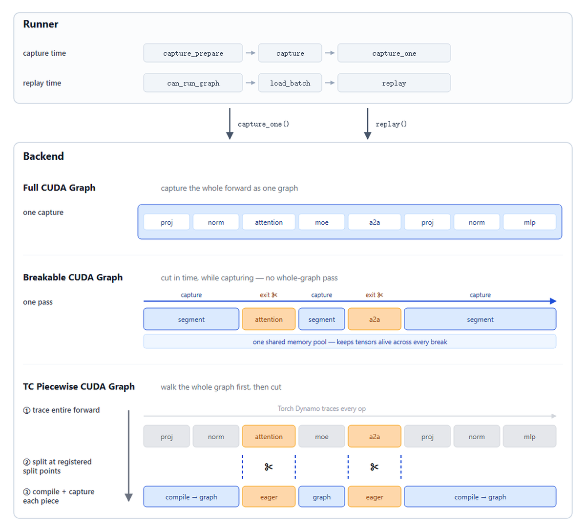
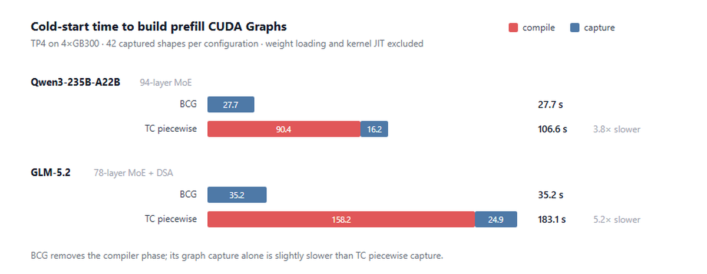
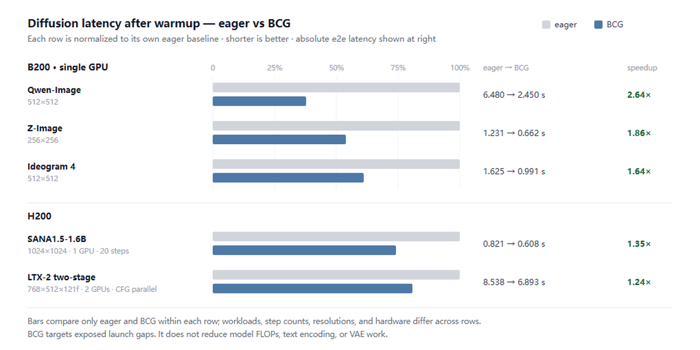
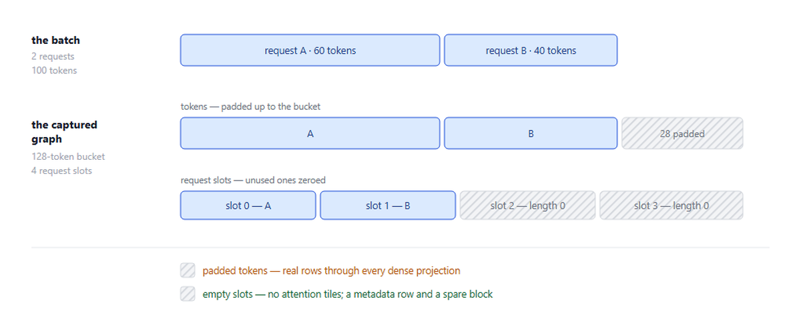
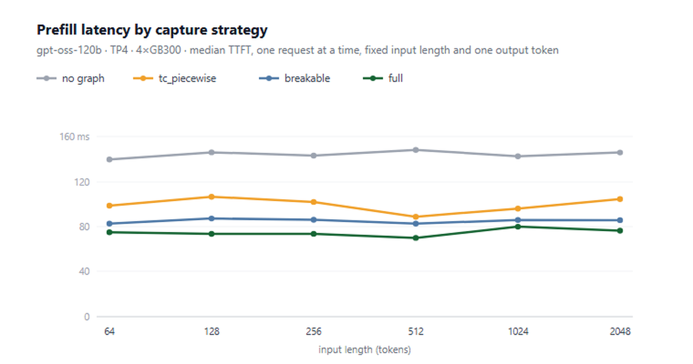
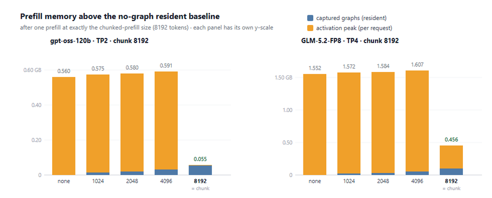

CUDA Graph承诺消除内核启动开销，但要在真实推理引擎里兑现这个收益，需要把尽可能多的工作负载纳入graph，同时不牺牲兼容性、启动时间或内存。
在SGLang中，我们围绕一个公共runner/backend接口重构了CUDA Graph支持，让不同的捕获策略能在执行路径间复用。对更复杂的prefill路径，SGLang社区引入了Breakable CUDA Graph，并率先用FA4和FlashInfer attention后端实现全CUDA Graph支持。这两种技术都是先在SGLang里作为开源服务技术开发出来的。
我们还深入CUDA Graph内存管理，包括跨形状和graph segment的内存复用，这正成为SGLang整体内存管理越来越重要的一部分。
一次推理步骤不是单个内核，而是一长串GPU操作。在现代LLM服务引擎中，从CPU反复启动这些操作会带来明显开销，尤其在延迟敏感的工作负载上。CUDA Graph通过记录一次GPU工作、以低得多的启动开销重放来降低这个开销。
但在现代推理引擎里用好CUDA Graph并不简单。graph设计必须适配不同执行阶段、与复杂内核和运行时相关行为兼容，并控制graph自身的捕获时间和内存开销。随着推理栈变复杂，正确的CUDA Graph集成越来越重要。
本文介绍SGLang如何构建CUDA Graph支持以及我们改了什么：runner/backend拆分与灵活组合；无编译器的Breakable CUDA Graph；prefill的全CUDA Graph；CUDA Graph内存占用。
重构之前，CUDA Graph支持是围绕各执行路径各自生长出来的。decode、prefill、投机解码各有自己的CUDA Graph runner，捕获形状、静态缓冲、重放、graph配置的逻辑大量重叠。随着执行模式和捕获策略增多，这种重复让基础设施复用变难，也让CUDA Graph相关的服务参数越来越含糊。

重构（PR #23906）把职责分成两层。runner管理捕获和重放所需的执行特定状态：捕获形状、静态输入缓冲、attention元数据、把活batch填充到捕获形状。backend决定执行如何被捕获：作为一个完整graph、一串可断开的segment、还是编译器生成的片段。
因为runner只依赖公共backend接口，每个执行路径能独立选择捕获策略。prefill和decode有各自的runner；投机解码增加更多：EAGLE draft、draft-extend和frozen-KV MTP draft步骤各建在decode runner上的runner，而target verify就是decode runner本身，每请求捕获多个token。
Full CUDA Graph：为每个选中形状捕获一个torch.cuda.CUDAGraph，无eager区域，三个backend中重放启动最少。这对decode天然适用：每个请求贡献一个token，主形状变量是batch size，可由一组捕获的batch-size bucket覆盖。prefill变化维度更多因此更难。
Breakable CUDA Graph（BCG）：捕获graph安全区域，同时允许选定操作在图段之间eager运行。不兼容操作可用eager_on_graph装饰器 标记；捕获在标记函数前停下、之后恢复，产生一串被eager区域分隔的CUDA Graph segment。与基于编译器的分段捕获不同，这些break直接在捕获时插入，而不是先trace整个模型再发现。
TC piecewise CUDA Graph：第三个backend通过编译器达到类似分段。torch.compile用fullgraph=True trace forward，生成的FX graph在注册的切分点分割，每片独立编译捕获。它是SGLang对部分CUDA Graph捕获的第一版答案，至今仍在breakable捕获未验证的平台发布。
CUDA Graph传统上要求捕获区域完全graph兼容。实践中，现代推理负载包含无法直接捕获的操作。prefill attention是常见例子：一些attention后端依赖运行时元数据和host端准备。单个不兼容操作就能阻止CUDA Graph覆盖forward大得多的部分。
我们引入BCG让捕获更灵活。机制和eager_on_graph装饰器先作为CUDA Graph debug模式的一部分落地（PR #19102），随后在PR #22218中构建成prefill的breakable piecewise backend。不再要求整个forward graph兼容，BCG允许选定操作eager运行，同时捕获它们周围graph兼容的区域。高层看，forward变成一串由显式eager break连接的CUDA Graph segment。
CUDA Graph在重放遵循固定GPU操作序列、无host参与时效果最好。但真实推理forward含有不适合这个模型的操作：attention后端可能根据实时序列长度规划，collective可能涉及运行时协调，服务功能可能动态更新状态。
只要出现一个这样的操作就放弃CUDA Graph，会让forward大部分未捕获。BCG让开发者直接用eager_on_graph装饰器 标记不兼容区域。捕获时，当前graph segment在到达标记函数时关闭，函数eager运行，之后在新segment恢复捕获。
重放时，记录的graph segment和eager函数按同样顺序运行。捕获时标记函数在图段之间运行一次，它返回的tensor被保留为持久边界缓冲，设备地址保持固定；后续segment针对该地址捕获。每次重放eager函数正常运行并返回新tensor，BCG把它拷贝进保留缓冲，下个segment从最初捕获的地址读到更新值。BCG从不检视或trace eager区域内部：它们只需正确执行。
功能上，BCG与之前的torch.compile分段backend产生同类可重放结构：被eager区域分隔的CUDA Graph segment。关键区别在结构如何构建：TC piecewise先让编译器理解整个forward再切分；BCG在捕获发生时直接放置切分。
更快启动。 对基于编译器的分段graph，编译而非捕获主导设置：torch.compile占prefill graph准备时间的78-86%，并随模型复杂度增长，235B MoE达90秒、GLM-5.2达158秒。BCG完全移除该阶段，单次捕获pass即达分段执行。

更广兼容。 SGLang大量依赖自定义CUDA、Triton和JIT编译内核，它们不是原生PyTorch算子。为让这些内核对torch.compile可见，常常要用torch.library包装并提供trace用的fake实现：这在内核栈中引入了编译器特定的脚手架。编译器还约束graph边界能放哪：跨注册算子边界的输入输出必须能被编译器表示。BCG在eager break处移除这个约束：graph系统无需理解标记函数如何实现或trace其内部，让graph边界跟随服务逻辑而非编译器trace和类型要求。
可调试。 捕获的CUDA Graph重放为不透明单元：普通Python不在其内执行，print、断言、逐步检查都难。BCG自然留下eager区域，普通Python每次重放仍在那里运行。SGLang用 --debug-cuda-graph扩展此思路，本质上把整个forward包进eager break：模型eager执行但仍走CUDA Graph runner、静态缓冲、重放路径和元数据准备。
BCG也被SGLang的扩散栈采用（PR #27436）。扩散在去噪过程中反复执行同一个DiT forward，当这些forward含许多小、启动受限的内核时，CUDA Graph尤其有用。

三个做法：捕获真实服务形状（分辨率、视频帧数、prompt条件长度、CFG模式、所选transformer都影响捕获签名；预热实际服务的形状，对未见签名回退eager）；围绕动态操作break（动态attention和运行时依赖的元数据准备保持eager，BCG捕获它们周围稳定的计算，无需torch.compile理解整个DiT forward）；利用重复去噪结构（BCG捕获一次稳定区域、在整个去噪循环重放，动态区域保持eager）。
这在执行是启动受限时特别有效。例如预热后，Qwen-Image在单B200上512×512端到端延迟从6.48s降到2.45s，Z-Image从1.231s降到0.662s。更广的教训：BCG移除启动开销，不减少模型FLOPs或让计算受限内核变便宜。它的优势在暴露的启动间隙占执行时间可观比例时最大。
Full CUDA Graph对decode直截了当：每个请求贡献一个token，主要变化维度是batch size。prefill更难，因为batch同时变化两个维度：总token数和这些token所属的请求数：而捕获的graph要求两者固定。加上依赖运行时元数据的attention后端，这让prefill的全CUDA Graph很难，也是我们当初采用BCG的主因之一。
最近我们找到让prefill执行足够静态以支持全CUDA Graph的办法（PR #27988），包括重构请求槽和attention元数据的表示，使受支持的attention后端不必再留在graph外。
SGLang用token bucket固定token维度。活batch填充到最近的捕获token数，就像decode把batch size填充到捕获bucket一样。请求维度单独处理：每个捕获graph预留固定数量的请求槽。活请求占用前几个槽；未用的重写为零长度sentinel，零序列长度和扩展长度、偏移停在真实token之后。如果batch的请求数超过graph槽数，回退eager执行。

sentinel元数据必须在每次重放时重写，因为捕获的graph仍读整个请求表。attention元数据同样在重放前为填充batch在graph外重建。所以今天全prefill捕获要求支持这种元数据准备风格的attention后端，包括FlashAttention和FlashInfer。
两种填充成本差异很大。填充的token是真实工作：它们成为捕获batch里的实际行，作为相同GEMM的一部分通过稠密投影。SGLang单独携带真实token数，让MoE路由、attention和线性attention内核能跳过填充区域大部分，但稠密计算仍为这些额外行付钱。
空请求槽便宜得多。 在FlashAttention的可变长度调度器中，工作从每个序列的实际长度派生，而不是给每个请求槽分配固定计算量。零长度请求因此几乎不贡献attention工作，主要加元数据和一点调度开销。这个不对称很重要：token填充是昂贵的维度，请求槽填充相对便宜。
全prefill捕获仍是实验特性，必须显式启用：引擎警告full是实验性的，生产工作负载指向breakable或tc_piecewise：目前主要在FlashAttention（fa4）和FlashInfer后端工作。
三种prefill捕获方式加eager基线，剩下的问题是各自重放成本。在gpt-oss-120b（TP4, 4×GB300）上单独测prefill：固定输入长度、单个输出token、一次一个请求、所有arm禁用decode graph：四条路径都运行：全图捕获比eager快1.93×，BCG 1.70×，TC piecewise 1.45×，所以BCG回放也比编译器后端快17%，不仅在构建时间。

差距来自各自每个forward做什么：BCG直接重放记录的segment，TC piecewise每次回调编译的可调用对象，在自己的捕获片运行前付出Torch Dynamo的guard检查和dispatch。在GLM-5.2上只有BCG能捕获：TC piecewise无法trace forward，全图捕获对它的稀疏attention无路：BCG相对eager 1.60×。每条曲线在32× 的prompt长度范围内平坦，这是启动开销而非计算的特征。
内存有两个独立挑战：防止分段捕获成倍增加常驻内存，以及捕获得足够远、让常驻graph内存真正取代最差的eager激活峰值。分段后端容易成倍增加graph内存：每个捕获形状含多个graph segment，每个segment的中间值必须保持有效供重放。
BCG通过三种复用避免这种倍增。跨segment共享内存池：捕获形状的每个segment用同一个CUDA Graph池，中间存储可复用而非每segment单独钉住。eager break处弱引用：当graph池已拥有tensor存储时，进入break的tensor被弱持有，避免延长tensor生命周期的多余Python引用。跨捕获大小单一输出缓冲：捕获大小共享单一最大输出缓冲，按各形状需要的行切片，而非每形状分配一个。
一个值不能这样处理：跨eager break携带数据的tensor。下个graph segment针对它的地址捕获，该缓冲必须保持存活并在每次重放原位更新。有了这些复用机制，即使大的捕获表也保持适度：GLM-5.2上78层MoE的42个形状只加2.4 GB graph内存。
CUDA Graph改变prefill内存使用的形态。Graph内存是常驻的：捕获时分配、服务器整个生命周期保持。Eager激活是瞬态的：每次prefill分配工作内存，最大受支持prefill决定峰值。

捕获一个prefill形状把瞬态工作集很大部分移进graph的常驻内存池。但这只对实际重放graph的形状有帮助。如果捕获阶梯停在最大prefill size之下，最大prefill仍回退eager并保留原激活峰值：而服务器还为它下面所有常驻graph付钱。这让捕获上限比捕获形状数量更重要。由于chunked_prefill_size约束最大单个prefill forward，捕获到该size移除最差的eager激活峰值。
上限低于chunk size时略高于无graph基线：它们添加常驻graph，激活峰值却原地不动。一旦上限到chunk size，最大prefill终于重放graph，峰值崩塌：gpt-oss-120b上几乎归零（0.56 GB到0.001 GB），GLM-5.2从1.55 GB到0.35 GB（其稀疏attention indexer仍在break处eager运行）。
捕获到chunked-prefill size买两样东西：更低总内存（激活峰值不再每请求付，总量落到无graph基线之下：gpt-oss-120b低0.51 GB，GLM-5.2低1.10 GB）和可预测内存使用（依赖工作负载的激活尖峰变成捕获时建立的固定分配，引擎可提前核算而非为瞬态峰值预留余量）。
参考：https://www.lmsys.org/blog/2026-08-17-advanced-cuda-graph